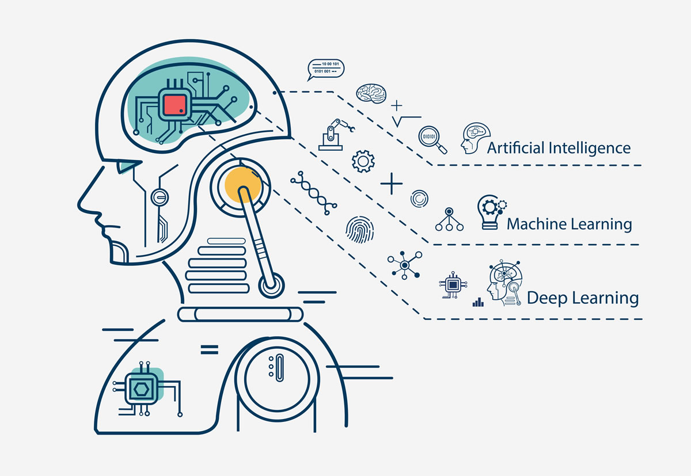

Šta je Artificial Intelligence (AI) ili umjetna inteligencija
Umjetna inteligencija je područje IT sektora koje se bavi simulacijom prirodne inteligencije pomoću mašina koje su programirane da uče i oponašaju radnje koje obavlja čovjek. Sa umjetnom inteligencijom vezuju se pojmovi poput machine learning (mašinsko učenje) i IOT (internet) of things.
Machine learning – mašinsko učenje je pojam koji se usko vezuje uz umjetnu inteligenciju i čiji je cilj konstruisanje algoritama i računarskih sistema sposobnih da se adaptiraju na novonastale situacije i koji uče na bazi prethodnih iskustava.
IOT (engl. Internet of things) označava povezivanje uređaja pomoću interneta te predstavlja mrežnu infrastrukturu u kojoj fizične i virtualne stvari svih vrsta komuniciraju i nevidljivo su integrirane.
Primjene umjetne inteligencije
Autonomni autmobil je prva od primjena umjetne inteligencije u kojoj se primjenjuje kombinacija raznih tehnika kao što su planiranje i pronalaženje najbolje rute od tačke A do tačke B, računalni vid za savladavanje prepreka, te sposobnost donošenja odluka u neizvjesnim situacijama. Da bi se izbjegla nesreća svaka od tehnika mora mora biti maksimalno precizna.
Siri, Cortana i Google Assistent su poznati virualni asisteni koji pomažu čovjeku u obavljanju svakodnevnih poslova.
Da li se ikada na vašem mobilnom uređaju pojavila reklama proizvoda koji namjeravate da kupite. Sigurno jeste i odgovor na pitanje kako leži u umjetnoj inteligenciji. Svakodnevno nailazimo na različite informacije od kojih su mnoge personalizirane kao što su sadržaji na Facebooku, Instagramu, internetski oglasi, preporuka za muziku filmove i sl. koji su posljedica rada algoritama u pozadini.
Algoritmi mašinskog učenja i autonomna vožnja automobila
Autonomna vozila su usko povezana sa IOT u kombinaciji sa mašinskim učenjem. Postavlja se pitanje kako takav automobil zaista radi bez upravljanja čovjeka. Glavni zadatak bilo kojeg algorima mašinskog učenja u autonomnom vozilu jeste kontinuirano praćenje okruženja i predviđanje mogućih promjena u tom okruženju.
-
Ovi zadaci su uglavnom podijeljeni na tri podzadatka:
- Detekcija objekta
- Identifikacija ili prepoznavanje klasifikacije objekta
- Lokalizacija objekta i predviđanje kretanja
| Zanimanje | Postotak koliko posao sadrži AI ili mašinsko učenje | Postotak otvorenih radnih mjesta nakon 60 dana |
|---|---|---|
| Machine Learning | 94.2 | 40.8 |
| Data Scientist | 75.1 | 30.0 |
| Computer Visin Engineer | 64.6 | 45.2 |
| Algorithm Engineer | 37.4 | 48.6 |
| Principal Scientist | 28.8 | 46.4 |
| Computer Scientist | 27.6 | 63.8 |
| Research Engineer | 24.3 | 44.1 |
| Statistician | 24.0 | 29.0 |
| Director od Analytics | 23.3 | 34.5 |
| Data Engineer | 22.1 | 34.8 |
 Osnovne karakteristike QR kodova, zašto su tako rasprostranjeni i kako ih koristimo
Osnovne karakteristike QR kodova, zašto su tako rasprostranjeni i kako ih koristimo